Gallery
The figures are written by docs/generate_assets/generate_assets.jl, which checks each against the package values it shows: MM2015 against the reference solution at every reference step, event counts and times, and end states against the returned rates. Color marks the phase (liquid, ice, and their sum) and line style the scheme throughout.
Regimes at the start of a step
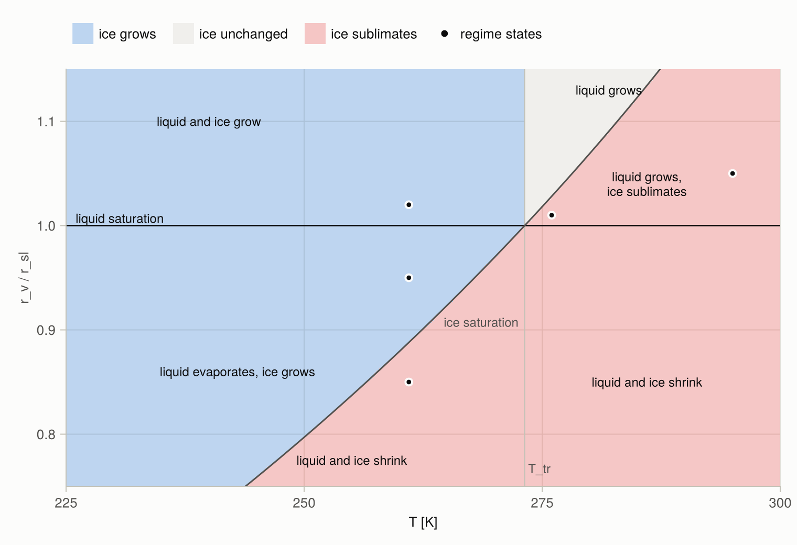
Sign of the ice rate at the start of a step (fill) at 800 hPa with 0.1 g kg⁻¹ of liquid and of ice and no forcing, against temperature and the vapor mixing ratio relative to liquid saturation. Liquid grows above the line $r_v = r_{sl}$ and evaporates below it. Below the triple point $T_\mathrm{tr}$, ice grows wherever the air is supersaturated over ice, including the band between the two saturation curves where liquid evaporates onto the ice. Above $T_\mathrm{tr}$, ice only sublimates, below its saturation curve, which lies above liquid saturation there: between the two curves liquid grows while ice sublimates. The dots are the five states below: 261 K at $r_v/r_{sl}$ = 1.02, 0.95, and 0.85; 276 K at 1.01; and 295 K at 1.05.
Five regimes
Each state has 0.1 g kg⁻¹ of liquid and of ice (no ice at 295 K), relaxation times of 10 s (liquid) and 50 s (ice), and no forcing, at 800 hPa. The regime names the state at the start of the step; within a step the parcel moves between regimes, and the schemes follow it through saturation and exhaustion events.
The first figure of each pair shows the change of liquid, ice, and their sum over one step, for steps from 1 s to an hour, on a symmetric logarithmic axis that is linear near zero. Dots are the reference solution of the parcel model. The thin dash-dotted lines are the change at the rate of the start of the step, and the thin solid lines the loss of all of a phase, $-q$. The lower panel is the difference of each scheme from the reference, relative to the larger of the reference liquid and ice changes; a missing point is an exact match. The second figure follows one step: condensate, supersaturation over liquid and over ice, and temperature, with a dot at each event.
Supersaturated over liquid and ice
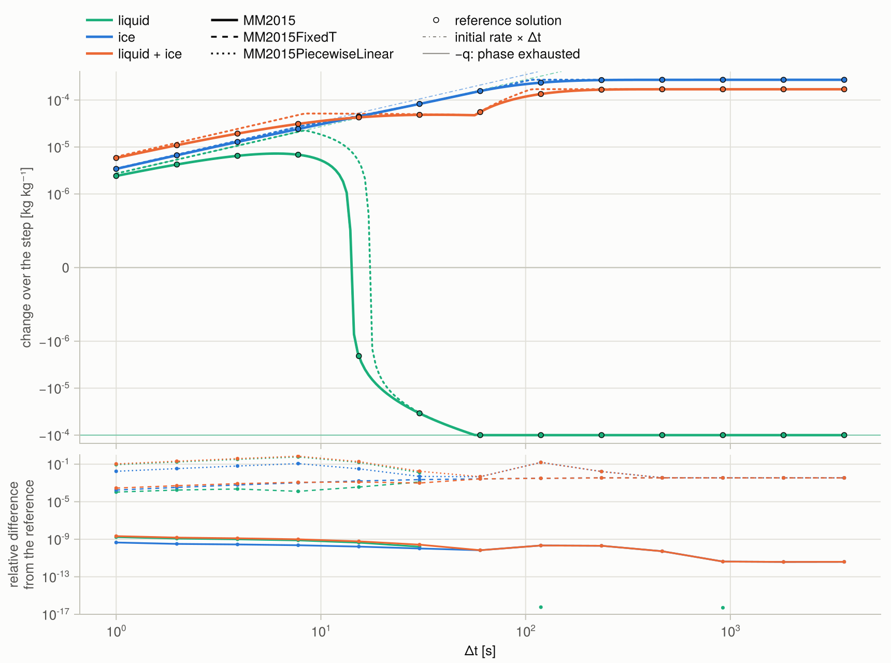
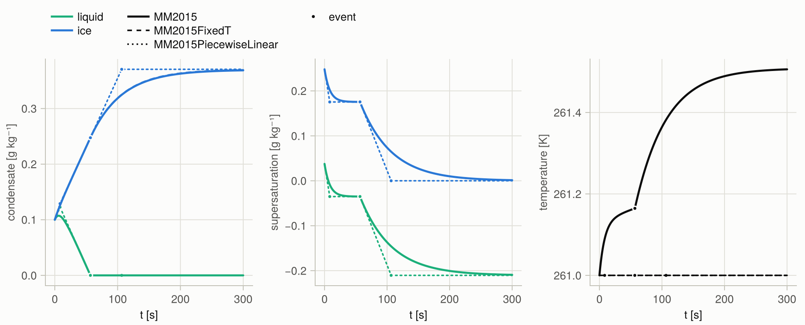
At 261 K and $r_v/r_{sl}$ = 1.02 both phases grow. The ice draws the vapor below liquid saturation within seconds, the liquid then evaporates onto the ice, and it is exhausted after 57 s. The liquid change over the step therefore rises, turns, and ends at $-q_l$. MM2015PiecewiseLinear holds each rate until the next event and reaches the turn later.
Between ice and liquid saturation

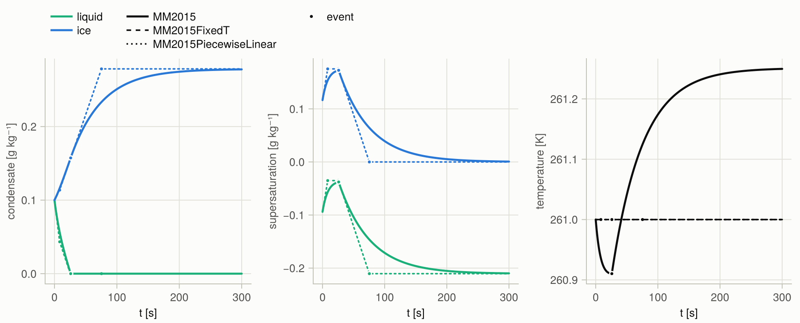
At $r_v/r_{sl}$ = 0.95 the liquid evaporates onto the ice from the start and is exhausted after 26 s. The sum changes sign when the ice growth overtakes the loss of liquid. The evaporation cools the parcel by 0.1 K before the deposition warms it.
Subsaturated over liquid and ice
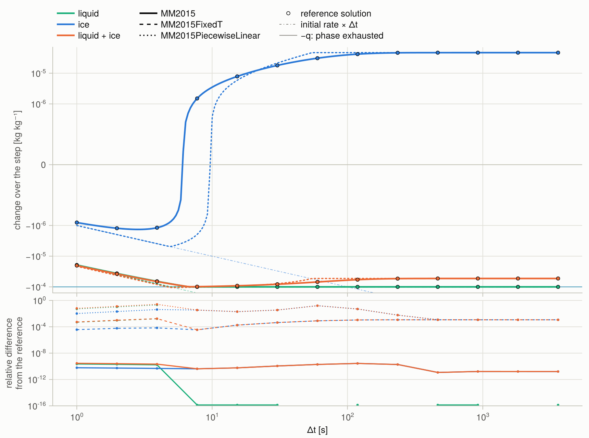
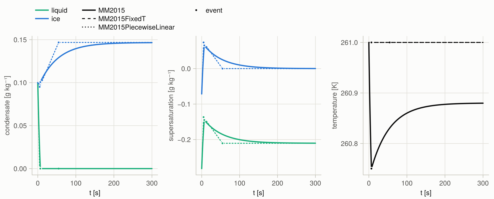
At $r_v/r_{sl}$ = 0.85 both phases shrink at first. The liquid is exhausted after 7 s, and the vapor it releases lifts the parcel above ice saturation: the ice turns from sublimating to growing, in steps longer than 6 s. MM2015PiecewiseLinear holds each rate until the next event and places the turn at 10 s.
Above the triple point, between the saturations
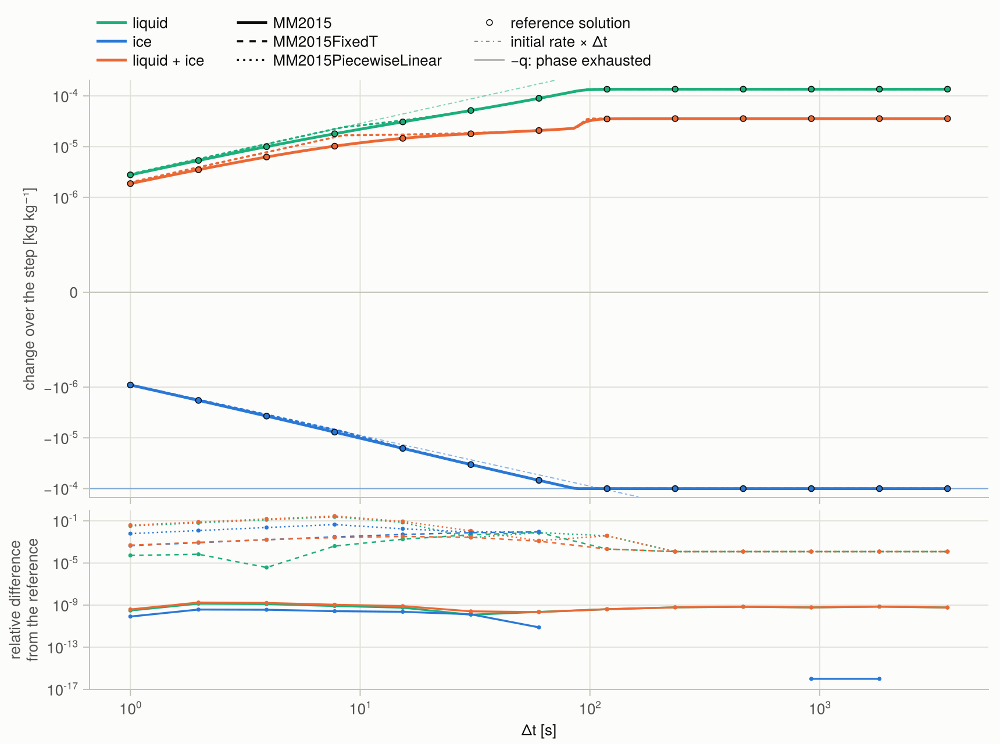
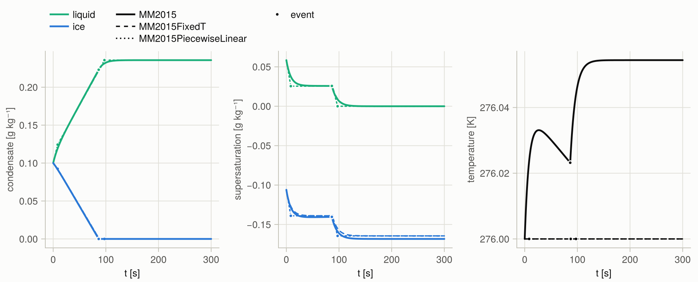
At 276 K and $r_v/r_{sl}$ = 1.01 the air is supersaturated over liquid and subsaturated over ice: the liquid grows while the ice sublimates, until the ice is exhausted after 86 s.
Warm, supersaturated over liquid
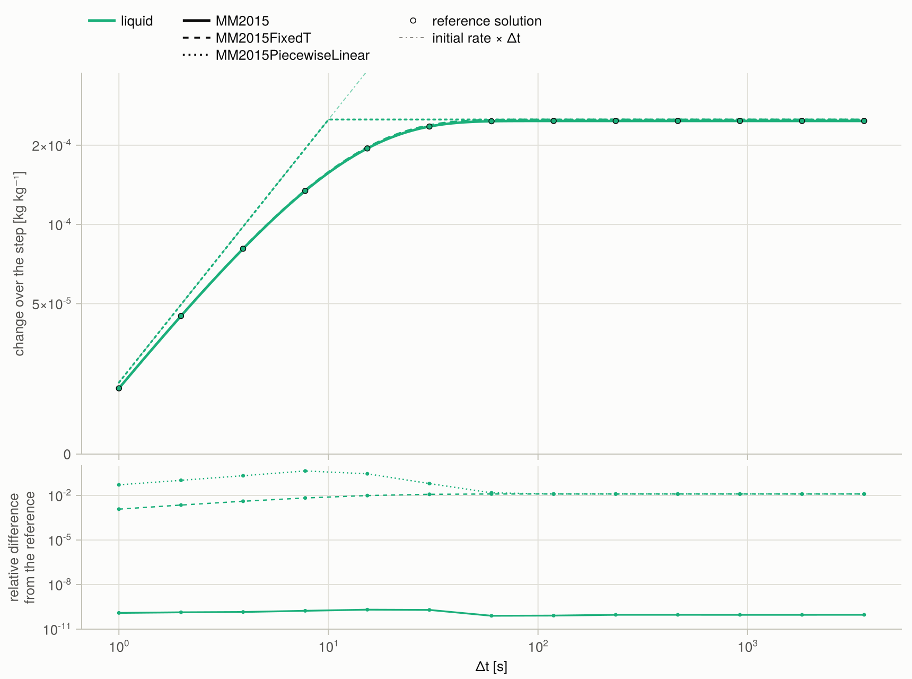
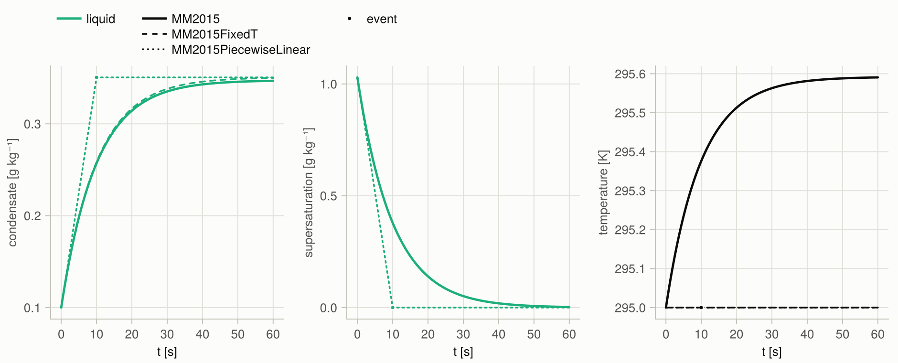
At 295 K and $r_v/r_{sl}$ = 1.05 the liquid takes up a quarter of the excess vapor within a minute and warms the parcel by 0.6 K. The warming raises the saturation humidity, which MM2015 follows; the frozen-coefficient schemes hold it at its start, and MM2015FixedT condenses 1.3 % more.
Latent heating and the events
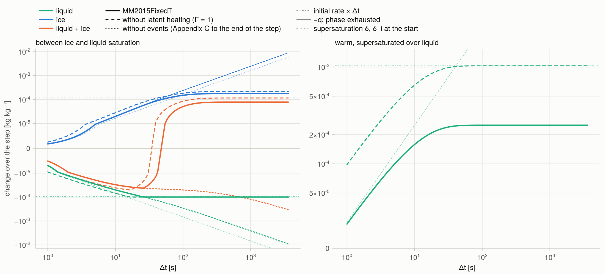
MM2015FixedT as computed (solid), with $\Gamma_l = \Gamma_i = \alpha = 1$ (dashed), and the Appendix C solution C5–C7 to the end of the step with the phases active at its start (dotted). The thin dash-double-dotted lines are the supersaturations $\delta$ and $\delta_i$ at the start. Without latent heating the warm parcel condenses its whole excess vapor $\delta$; with it, the latent heat raises the saturation humidity and the liquid takes up about $\delta/\Gamma_l$. Without events the liquid evaporates past its own mass and feeds the ice without bound, through the term $(q_{sl} - q_{si})/(\tau_i\Gamma_i)$ of C7; the exhaustion event stops the liquid at $-q_l$.
Forcing
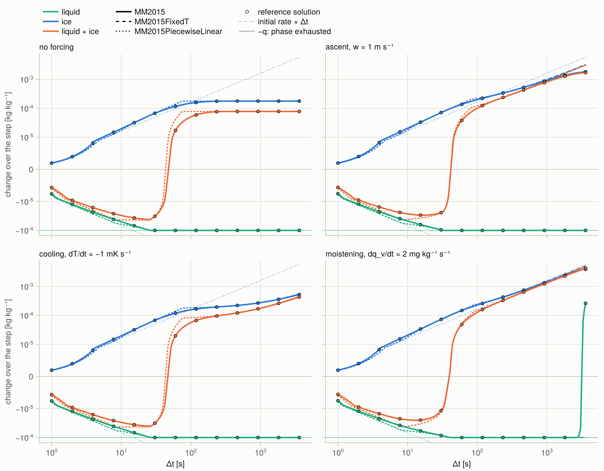
The state between ice and liquid saturation without forcing and with each of three forcings: ascent at 1 m s⁻¹, cooling at 1 mK s⁻¹, and moistening at 2 mg kg⁻¹ s⁻¹. Each forcing keeps the ice growing after the liquid is gone. Under moistening the deposition warms the parcel from 261 K to 273 K within the hour, which shrinks $q_{sl} - q_{si}$ from 0.21 g kg⁻¹ to 0.04 g kg⁻¹ at 3300 s; the parcel reaches liquid saturation after 2740 s and liquid forms again. MM2015 and the reference agree. The frozen-coefficient schemes hold $q_{sl} - q_{si}$ at its start, and the supersaturation over liquid settles at $A_l\tau_i\Gamma_i/\alpha - (q_{sl} - q_{si}) = -0.11$ g kg⁻¹.
The psychrometric factor
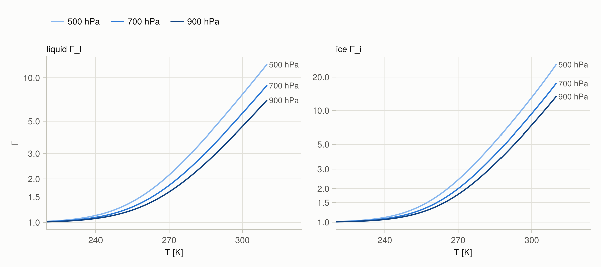
$\Gamma = 1 + (L/c_p)\,\partial q_s/\partial T$ over liquid and over ice at saturation and three pressures. Each phase-change rate is divided by its $\Gamma$: the latent heat released or taken up changes the parcel temperature and with it the saturation humidity, which offsets part of the vapor excess. $\Gamma$ is close to 1 in cold air, reaches 4.5 to 7.5 over liquid at 300 K, and is larger at lower pressure, where the saturation mixing ratio is larger.